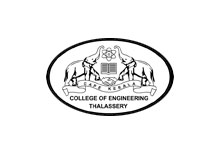

|  | COLLEGE OF ENGINEERING THALASSERY |
At present the college provides eight buses in different routes for the faculties as well as the students.
College also provides seperate hostels for both boys and girls near to the college with mess, internet facility, medical facility, transportation etc.